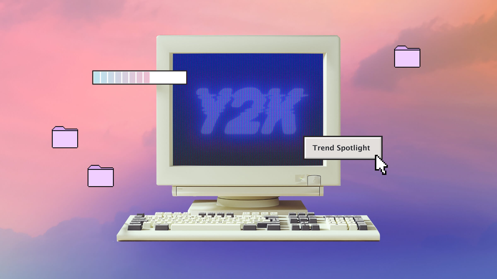
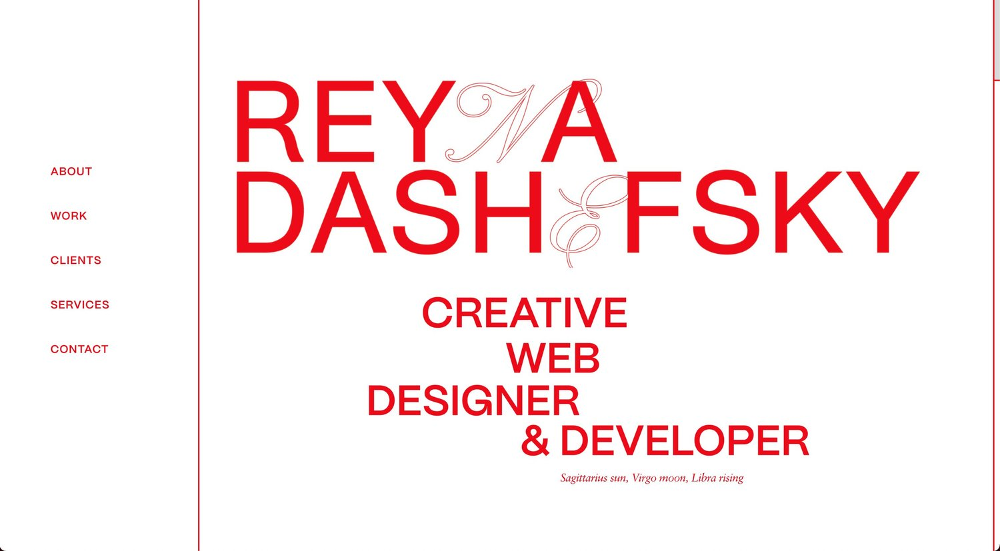
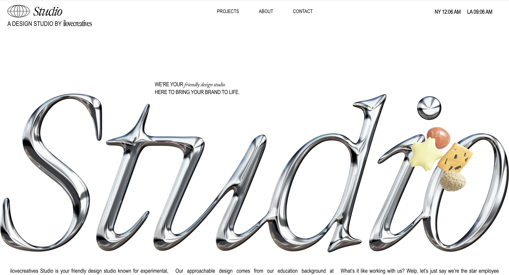

Why do I like creative Web Design?
I enjoy a friendly, approachable design known for experimental yet functional designs that feel fresh and engaging without being overwhelming or predictable. With a background in front-end development through SheCodes, I want to specialize in turning complex website creation into simple, impactful executions that make audiences feel seen. I'm easygoing and organized, focused on results, and committed to making the process fun.
My favorite web visuals
Y2K Aesthetic
The Y2K aesthetic is sparking nostalgia for the 2000s' mix of cyberculture, early social media platforms like MySpace, and the rise of gadgets like the iPod. This era blended 90s alternative trends with digital culture, embracing emo music, pop punk, and online gaming, creating a bright and optimistic atmosphere for the new century.
View SiteReyna Dashefsky
Reyna Dashefsky’s portfolio offers a refreshing user experience. With all the web content accessible via one vertical scroll, this site sports a neat aesthetic that highlights Reyna’s creative talents and services in a streamlined manner.
View SiteStudio by ilovecreatives
A friendly design studio known for experimental, but approachable and functional design. Their designs are fresh and interesting. One can probably tell I took a lot of inspiration from them when creating this page.
View Site